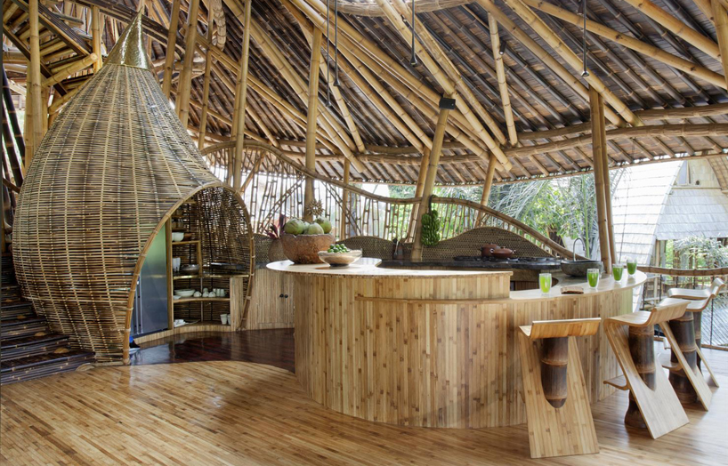

Design starts with inspiration

Interview with Ridwan Kamil on his Bottle House
What's your favorite room to design for yourself and why?
Because I wanted a sense of spaciousness just for me and my wife, I designed the master bedroom, master bathroom, walk-in closet and my library as one continuous room. With this approach, I feel I have a sort of home-inside-home concept.
What's the most difficult part about designing for yourself? What's the best part?
The most difficult part was that I didn't have a working plan ready for the contractors. I gave them hundreds of hand sketches and working drawings. Basically, I designed on-site. I came, I imagined, and I drew. It's difficult and fun at the same time. The best part was when I got the big idea of what to do with thousands of recycled bottles. I was experimenting—used materials can be useful and interesting. I tested many ways to construct using the bottles. They add a unique quality to my home. Every time the sunlight or artificial light hits them, it is an orchestra of light.
Did you stay within your budget? Or did you have a budget?
Of course I had a budget, and the house is more or less within my budget. There is nothing fancy about my home and its interior furnishings. My home cost around $160,000. That includes all interior furnishings. That figure in an Indonesian context is considered medium range.
How does designing your own home change the way you work with clients?
Clients are more confident working with me when they see my design philosophy applied in my own home. The spirit of recycling also gets into their thinking in a revolutionary way. It's good to hear that some of my clients are starting to think about using recycled materials, too.
How did the current economy affect your design choices, or did it?
Yes, of course. But the cost of building materials for construction is standard. Finishing choices usually make a big difference. Also, interior furnishings can make the cost very high. I see often in Indonesia that the total cost of interior furnishing is higher than the construction cost. I managed to make it affordable by designing a lot of built-in furniture. I bought a designer chair or lamp just to accentuate. The rest, mostly, are locally made.
Did you incorporate changing technology into your home? If so, what were the challenges and benefits?
The technology is basic. No special "smart home" appliances, only a wireless doorbell.
Were you finally able to try out something your clients were not adventurous enough to allow?
I was able to experiment with recycled bottles—something that my clients were not brave enough to allow. But now, after finishing my home, several new clients are asking me to come up with something fresh and experimental with new or recycled materials for their home.
Did you arrange your schedule so that you could work exclusively on your home, or did you work on your home between other projects?
I worked on my home between other projects—that is why it took two years to complete. A regular home of that size usually takes a maximum of eight months to complete. I had only Saturdays and Sundays to visit the site and talk to my contractor.
What advice would you give those designing their own home for the first time?
You have to design a home that can truly express your personality. And, if you are an architect, making a big design statement is rewarding and worth pursuing because society expects something extra from an architect's own home.
Ibuku Bamboo Architecture and Design
Ibuku is a team of designers and builders who aspire to make the most of bamboo and local talented craftspeople and young minds. We believe that bamboo’s potential is underestimated. It should be used to house many more people, especially in the tropics. We work hard to draw out beauty from this abundant wild grass. The traditional Balinese craftsmen work closely with our designers to develop a balance of ancient and new ideas. It also takes significant modern engineering to create original bamboo structures that meet our highest standards. Elora Hardy leads Ibuku’s vision and sustainable design. In 2010 Elora returned to her childhood home in Bali. Together she and her team of talented Indonesian designers and architects have built over forty new bamboo structures. They include Green Village, parts of Green School and other projects, mostly on the island.
Why Bamboo?
“So why Bamboo? Bamboo is the future. It is the most beautiful, versatile, tallest and strongest material that we could possibly choose. The rainforest is almost gone, plywood is mostly made from the rainforest and cement has a carbon load that is not going to help the future. That leaves bamboo and if children plant bamboo today in eight years they will have timber ready to go and they will get timber every year for the rest of their life to build anything they need” -John Hardy, Green School co-founder We build because we believe in bamboo. Its strength, beauty, flexibility, 4-year growth cycle, and carbon sequestration capacity make it the most environmentally conscientious building material conceivable. Though bamboo has traditionally been used throughout Asia in short-term structures, new treatment methods have given it a capacity for longer life. Our engineers, architects and designers have created a completely new design vocabulary. Not only is bamboo good for the environment, but it also helps the people living in the space to connect with nature. Throughout Asia, bamboo has always been regarded as sacred, symbolizing grace, strength, flexibility, endurance and longevity. The mystique and beauty of the bamboo forest is one of the most common themes for paintings and jade carvings. Ancient Chinese literature held bamboo in profound esteem: “When the storm comes, the bamboo bends with the wind. When the storm ceases, it resumes its upright position.” Bamboo is a symbol of the harmony between nature and human beings.
STRENGTH
Bamboo is strong, with the compressive force of concrete and the strength-to-weight ratio of steel.
RENEWABILITY
With very little attention, a bamboo shoot can become a structural column within three years, and that building could stand strong for a lifetime.
SUSTAINABILITY
With its three-year growth cycle and carbon sequestration it is a uniquely efficient and responsible resource. Even sustainable timber can’t begin to compare with bamboo as a conscientious building material.
LONG LIFE
Though bamboo has traditionally been used throughout Asia, new treatment methods have given it a longer lifespan. Ibuku’s bamboo, selectively harvested from local sources, is treated ecologically, then lab tested to confirm its durability and integrity.